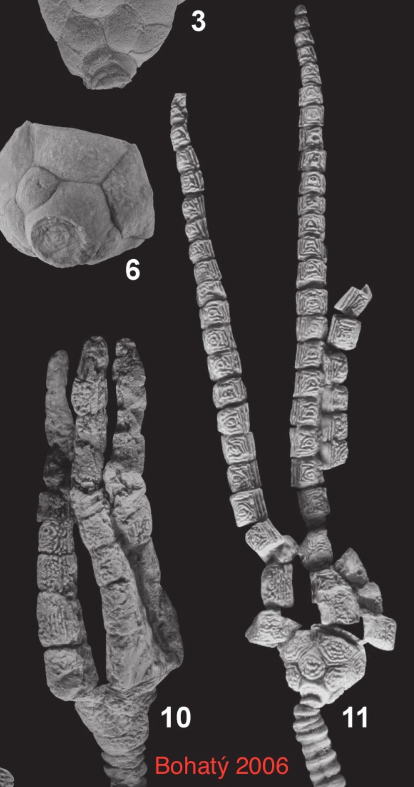
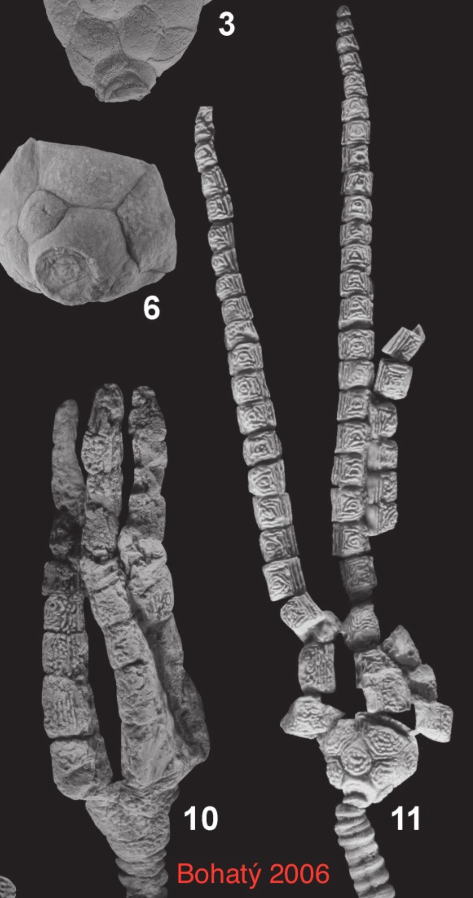

Cupressocrinites hieroglyphicus
• Devonian
• Drotops Armatus Couche
• Issoumour, Morocco, Africa
Size: 6 cm crown
Here is an unidentified and probably undescribed crinoid from the Devonian of Morocco. At a glance it resembles the genus Synbathocrinus, with its slender, elongated unbranched arms. However, this specimen is dicyclic and a cladid, and so cannot be the monocyclic disparid Synbathocrinus. The best match might be some species of Cupressocrinites with an unusually slender, elongated crown, similar to Cupressocrinites elongatus but even more extreme. Also note the bizzare wrinkled/pitted ornamentation on the calyx and arms, reminiscent of a raisin.
Addendum: I believe this specimen is a close match for Cupressocrinites hieroglyphicus, which has been described from the Devonian of Germany (Bohatý 2006).
Addendum 2: Jan Bohatý has confirmed this specimen as Cupressocrinites hieroglyphicus (Schultze 1866).


 
